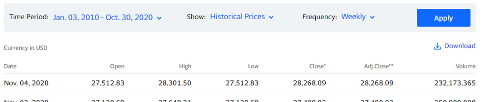
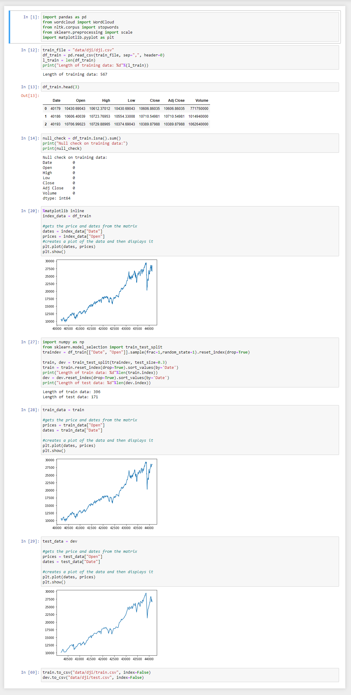

We decided to base our model off the Dow Jones Industrial average to predict future prices based off the past 10 years.
The data was pulled from Yahoo Finance where each data point represents the opening price at the beginning of the week.

Analyze and splitting the dataset

Model training and testing using linear regression